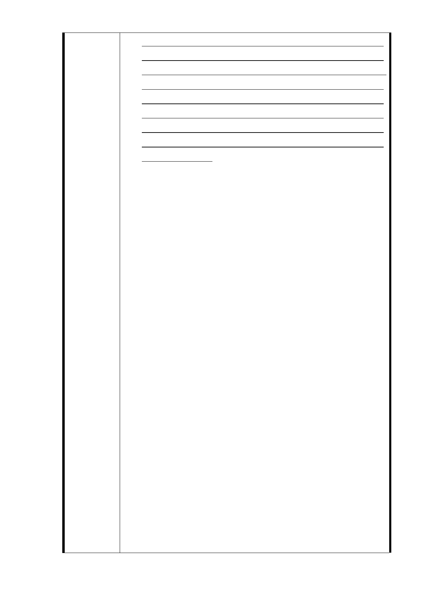

訂臺北市主要計畫商業區（通盤檢討）計畫案」變更之
商特區或 89 年 8 月 25 日公告「修訂臺北市信義計畫地
區細部計畫（第二次通盤檢討）暨配合修訂主要計畫案」
變更之特定業務區，均規定維持原使用分區建蔽率及容
積率，以確保都市環境品質。故本案聯開基地未來無論
變更為土地開發區（捷）或商業區，其基準容積率應依
前開全市一致性原則辦理，增加建築容積仍應在基地具
有公益性、環境貢獻之前提下，以核給獎勵容積方式辦
理，以符公平。。
二、本基地土地及建物產權複雜，計有（1）有地上建物及土
地持分。（2）無地上建物但有土地持分。（3）有地上建
物但無土地持分。（4）無地上建物也無土地持分等四類
型，有關基地範圍內之「松台公寓」屬 56 年興建時，因
建商倒閉，致建物產權不完整與興訟糾紛至今，屬私權
糾紛。
三、捷運工程徵收（或協議補償）土地、房屋，係按土地、
房屋之價格分別辦理計價，補償對象為已依法辦竣登記
之土地或建物所有權人或該建物事實上之處分權人。如
涉及私權糾紛需由法院判決者，當依法院判決結果為
準。無土地無建物者與有土地或建物之合法持有者之處
理方式並不相同，且互相不影響其應有之權益，依土地
法第 43 條規定：依本法所為之登記，有絕對效力。再
依民法第 758 條規定：不動產物權，依法律行為而取得、
設定、喪失及變更者，非經登記，不生效力。換言之，
房屋及土地一經登記，有絕對效力。
四、依「臺北都會區大眾捷運系統開發所需土地協議價購協
議書」第一條二款：「乙方所有土地上之土地改良物，應
由甲方一併價購取得，…」、同條三款：「乙方應配合工
程建設之需要，依甲方通知之期限前拆除地上物交付土
地。」之規定，故應由土地所有權人與有建物無土地所
有權人自行協商或依法處理。
五、捷運工程局辦理捷運工程用地地上物查估補償，係依據
「臺北市舉辦公共工程拆遷補償自治條例」及「臺北市
舉辦公共工程拆遷補償自治條例施行細則」等規定，並
按個案情形辦理，查定建物補償（或違章處理），配合騰
空交屋獎勵金、人口遷移費等給付項目。
六、開發用地之投資人，除開發用地屬單一土地所有人外，
係採公開徵求投資人，由本府成立審查及評選委員會，
就投資人申請所提送之資格能力及開發建議書(開發規
- 63 -